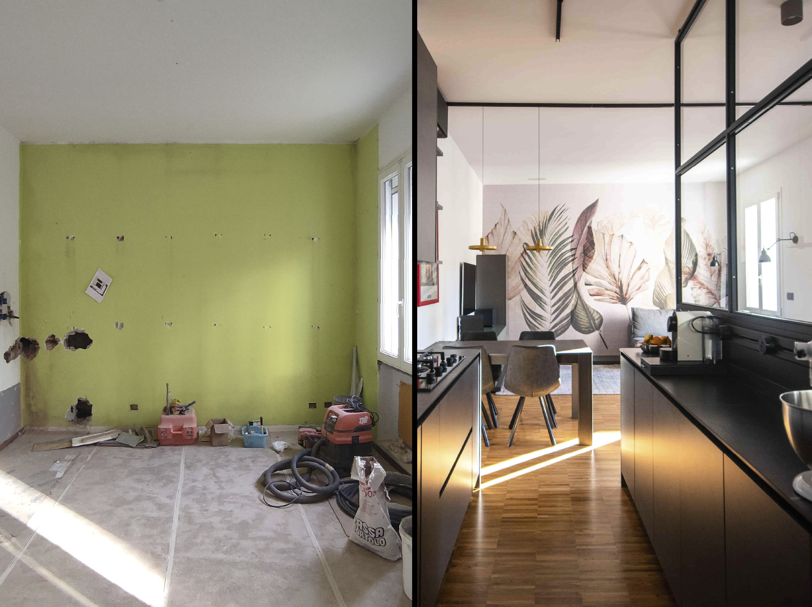

01
Progettazione d'interni
Ideazione e sviluppo completo per ambienti residenziali e commerciali.
Dallo studio della pianta distributiva alla definizione delle finiture e degli arredi. Un percorso sartoriale che mette al primo posto le esigenze della Persona.